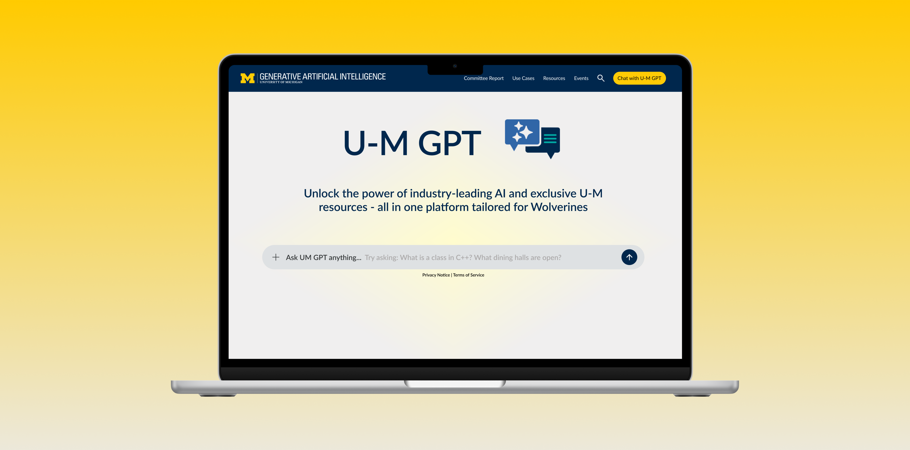
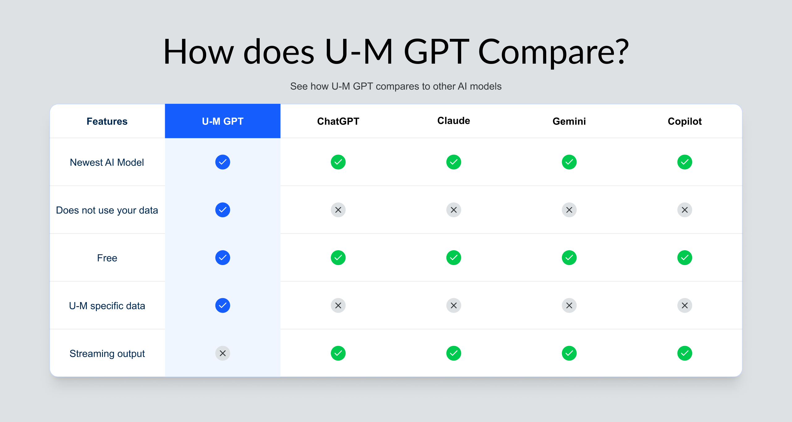
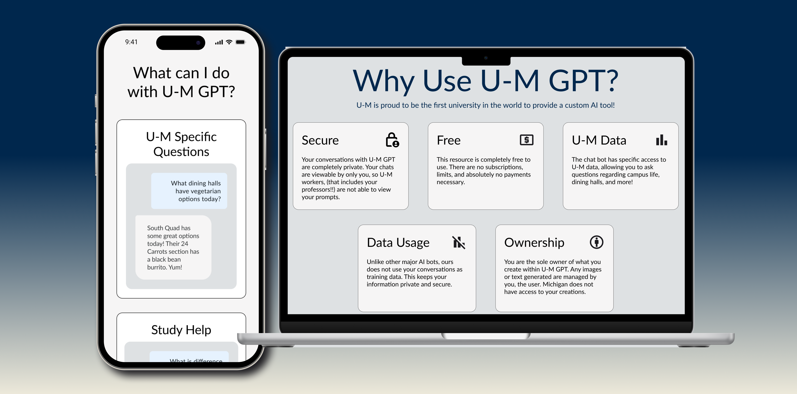
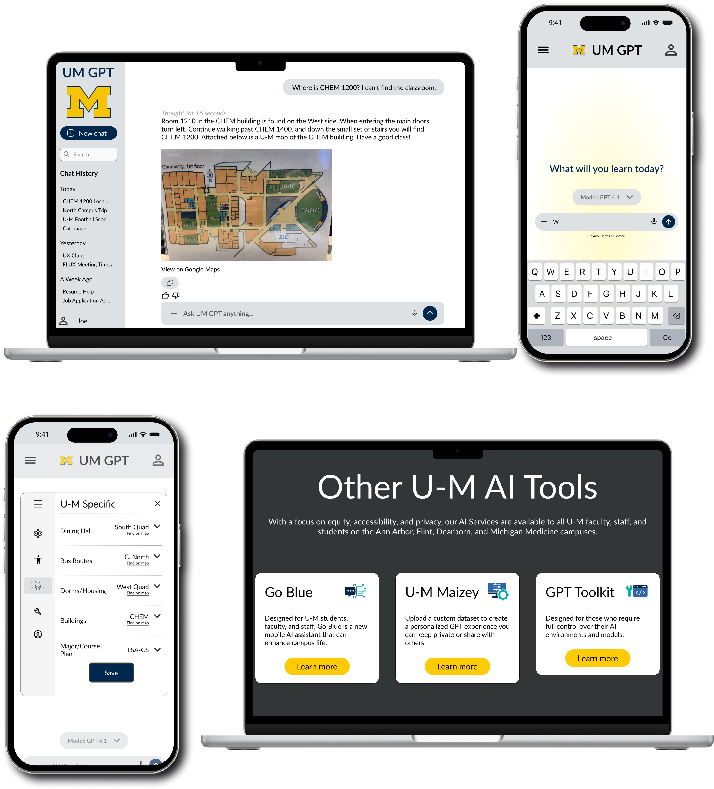

U-M GPT Website Redesign
Summary
Over a semester, I created a redesign for the official UM-GPT website through Michigan's Information Technology services. Across U-M, I found a common issue that students and professors alike were having issues with locating rooms within buildings. In this new design, I believed this issue would be solved through U-M GPT, which would have access to maps of Michigan buildings.
Throughout my process I sketched, wireframed, and ended with a high-fidelity design. I focused on improving users' understanding of UM-GPT's benefits through the landing page, and added additional features such as location services to the product.

Starting Point
The original UMGPT website had decent usability, but struggled with overall personality and keeping up with current AI models user interfaces.
Overall, the site could use an improvement in its UI through its organization of chats and user settings. These improvements would help reach the goal of getting more students to utilize the site.

Problem Solving
My goal was to maintain specific Michigan branding while implementing new features to help students daily lives.
I began with creating wireframes and brainstorming how to improve information structure without compromising visual identity.

Implementation
I first redesigned the landing page, which provided valuable information to potential users. The page described the benefits of UMGPT over mainstream AI services, its use cases, and other Michigan AI tools.
I created an extensive component library to ensure the design process was efficient.

Results
After the redesign, Michigan students and faculty had a new feature: Location services.
This allowed users to find the nearest dining hall, bus stop, and their classrooms. Additionally, navigation was improved through clearly labeling hierarchy in the left navbar.
